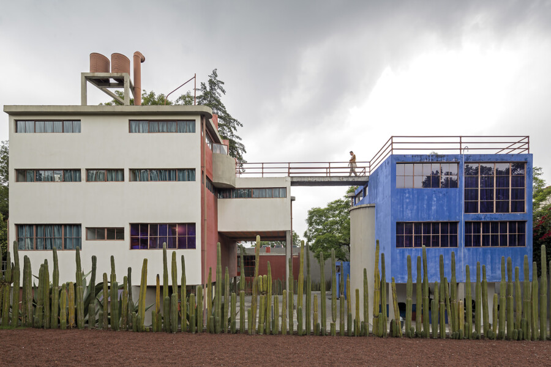

LATINITUDES: A Collection of Latin American Modern Architecture
Brazilian photographer and visual artist Leonardo Finotti discusses Latinitudes and his long-term project documenting modern architecture across Latin America, including the development of the exhibition and its accompanying publication series with Lars Müller Publishers. The talk is followed by a reception to celebrate the opening of the exhibition.
Free; RSVP required
CLICK HERE
About the Exhibition
Presented for the first time in the United States, Latinitudes is a photographic survey of modern architecture across twelve Latin American cities: Buenos Aires, Argentina; Bogotá, Colombia; Caracas, Venezuela; Guatemala City, Guatemala; Havana, Cuba; Lima, Peru; Mexico City, Mexico; Montevideo, Uruguay; Quito, Ecuador; San José, Costa Rica; Santiago, Chile; and São Paulo, Brazil. Featuring more than 100 photographs by Brazilian photographer Leonardo Finotti and curated by Brazilian architect Michelle Jean de Castro, the exhibition presents modern architecture across Latin America from a new perspective. In Chicago, a city foundational to modern architectural experimentation, the exhibition invites viewers to consider how modern architecture emerged in parallel across Latin America and throughout the Americas.
Combining the words “latitudes” and “Latino,” Latinitudes proposes a horizontal framework connecting cities across shared geographies and histories. Housing, civic, and cultural works by key figures of modernism—Luis Barragán, Lina Bo Bardi, Roberto Burle Marx, Félix Candela, Eladio Dieste, Emilio Duhart, Ricardo Legorreta, Paulo Mendes da Rocha, Oscar Niemeyer, Juan O’Gorman, Mario Pani, Ricardo Porro, Rogelio Salmona, Clorindo Testa, and Carlos Raúl Villanueva, among others—are presented within an interconnected architectural landscape spanning Latin America.
Organized from south to north by latitude, the exhibition draws on Uruguayan artist Joaquín Torres-García’s América invertida (1943) and his declaration in his 1934 lecture manuscript La Escuela del Sur (The School of the South) that “our north is the south.” Where Torres-García inverted the map to challenge axes of power, de Castro and Finotti place each city on the same horizon—without hierarchy. Installed across two floors of the Graham Foundation’s Madlener House, the exhibition uses six standardized image formats scaled to the buildings and aligned along a continuous horizon line at eye level, guiding visitors through twelve cities along a single latitude. The photographs are monochrome prints on aluminum composite panels, referencing gelatin silver photography while using a contemporary process.
The exhibition coincides with the release of A Collection of Latin American Modern Architecture, Volume 2 (Lars Müller Publishers, 2025), the second in a three-volume series spanning exhibitions and publications as a long-term effort to document the region’s modern architecture. Finotti received a Graham Foundation grant in 2017 to support the research underlying this volume.